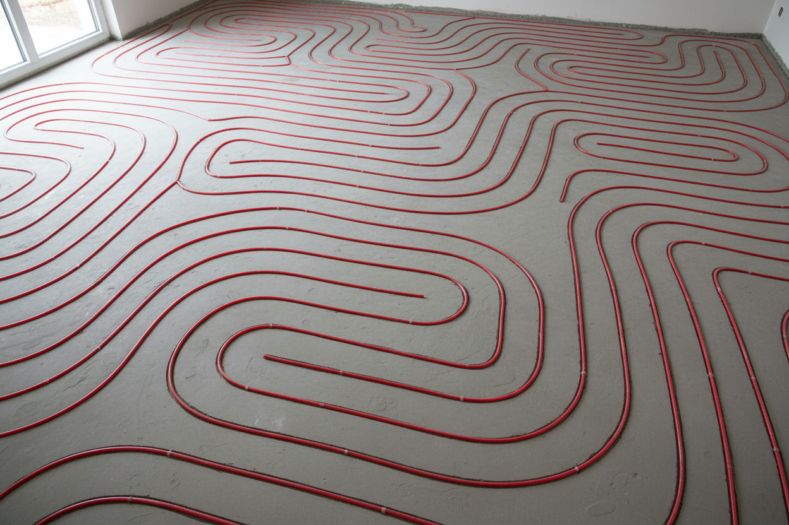

Fußbodenheizung nachträglich einfräsen lassen
Krotzer & Eisele fräst Heizrohrkanäle in geeignete Bestandsestriche, verlegt die Heizrohre, führt den Erstverguss aus und prüft die Dichtheit – ohne vollständigen Estrichrückbau, mit geringer Aufbauhöhe.

Krotzer & Eisele: Ihre Lösung für nachträgliches Fräsen
Unkompliziert. Präzise. Fachgerecht.
Mit dem Verfahren von Krotzer & Eisele rüsten Sie eine Fußbodenheizung im Bestand nach – ohne vollständigen Estrichrückbau und mit geringer Aufbauhöhe. Ob Altbau, Sanierung oder Modernisierung: Wir fräsen die Heizrohrkanäle in geeignete Bestandsestriche, verlegen die Heizrohre und verschließen die Nuten im Erstverguss.
Wir arbeiten handwerklich präzise und staubarm mit geeigneter Fräs- und Absaugtechnik. Vor der Übergabe an die Folgegewerke prüfen wir die verlegten Leitungen auf Dichtheit – der Anschluss an die Heizungsanlage erfolgt durch den zuständigen Heizungsbauer oder bauseits.

Beratung
Wir prüfen die örtlichen Gegebenheiten und ob der vorhandene Estrich für das Fräsverfahren geeignet erscheint – und stimmen die Fräsflächen ab.
Schnelles Angebot
Nach Übermittlung der Projektdaten und Fotos erhalten Sie zeitnah ein detailliertes, unverbindliches Angebot.
Fachgerechte Ausführung
Fräsen, Rohrverlegung, Erstverguss und Dichtheitsprüfung – sauber ausgeführt bis zur klaren Schnittstelle zum Heizungsbauer.
Kalte Füße? Nicht mehr.
Sauberes, präzises Fräsen für Ihre nachträgliche Fußbodenheizung – fachgerecht ausgeführt und auf Dichtheit geprüft.
Wir bereiten vor – der Heizungsbauer schließt an
Eine eindeutige Leistungsabgrenzung schafft Klarheit für alle Beteiligten.
Unsere Leistung
- Fräsen der Rohrkanäle
- Verlegung der Heizrohre
- Erstverguss der Fräsnuten
- Dichtheitsprüfung der verlegten Leitungen
Durch den Heizungsbauer
- Anschluss an Heizkreisverteiler & Heizungsanlage
- Hydraulischer Abgleich & Inbetriebnahme
- Heizlastberechnung & Auslegung der Anlage
- Elektro- und Regelungstechnik

Nicht jeder Boden ist automatisch geeignet
Vor Beginn der Fräsarbeiten ist eine Prüfung der örtlichen Gegebenheiten erforderlich. Eine Ausführung erfolgt nur, wenn der vorhandene Untergrund für das Fräsverfahren geeignet erscheint.
- Estrichart & -dicke
- Tragfähigkeit
- Risse & Hohlstellen
- Belagsreste
- Leitungen im Boden

Fußbodenheizung nachrüsten – sprechen wir darüber
Senden Sie uns Fotos, Angaben zur Fläche und – falls vorhanden – einen Grundriss. Je genauer die Angaben, desto besser lässt sich die Ausführbarkeit vorab einschätzen.
Antworten rund ums Einfräsen
Erfahren Sie alles über Ablauf, Voraussetzungen und die klare Schnittstelle zum Heizungsbauer. Ist Ihre Frage nicht dabei? Kontaktieren Sie uns gerne.